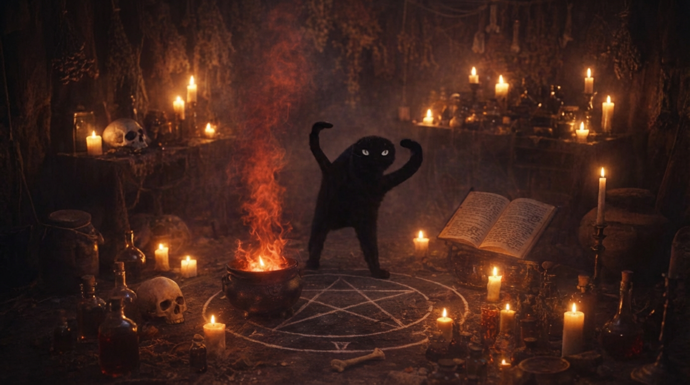

Gato Preto Amaldiçoado

Ficha Técnica:
Nome: Gato preto
Nomes alternativos: Gato do Azar, Gato do Mal, Gato das Bruxas, Gato da Noite, Gato da Lua
Raça: Gato
Tipo da raça: Amaldiçoado
Nivel de ameaça: Médio
Características físicas:
- Sombra não corresponde à posição da luz
- Pelagem totalmente negra
- Forma corpórea totalmente não natural para um gato
Capacidades:
- Visão total no escuro
- Audição a longas distâncias (aproximadamente 10km)
- Utilização de bruxaria
- Utilização de magia negra
- Utilização de rituais
- Velocidade em Mach1 (relatos não totalmente confirmados, mas confiáveis, de Mach5)
- Comunicação com entidades sobrenaturais
- Transferência de poder para humanos
- Criação de pactos
Fraquezas:
- Ele sente um medo irracional de água
- Sua natureza de gato o torna vulnerável a distrações (laser vermelho, objetos em movimento, caixas)
- Rezas bravas o enfraquecem
- Capacidade física extremamente abaixo da média, sendo vulnerável a ataques físicos
Como contê-lo:
Não tente o conter. Mesmo nossos melhores agentes sofrem para o capturar. Se você estiver em pânico por ele estar perto de você, apenas se afaste. Se ele estiver o ameaçando, acabe com sua própria vida antes que ele o faça. Caso contrário, sua alma será utilizada por ele.
Relato do Dr Arazec:
Dr Arazec é um dos melhores agentes da equipe de investigação do governo. Neste dia, ele estava em uma missão para capturar o Gato Preto Amaldiçoado. Sua equipe e suas próprias técnicas foram consideradas úteis para isso.
"Quando fomos capturá-lo, ele estava tranquilo. Nós tentamos convencê-lo a vir conosco, mas ele decidiu se revoltar. Aparentemente, ele estava ferido, mas mesmo assim ele conseguiu sobressair nosso esquadrão com certa facilidade. Sua velocidade alcançou aproximadamente Mach 5, ou ao menos foi o que nossos dispositivos disseram. Seus rituais e bruxarias foram o bastante para derrubar nossos melhores soldados, mas ele aparentemente não os matou de propósito. Nossa única perca naquele dia foram centenas de milhares de dólares em equipamentos. Se ele quisesse, nós estaríamos caídos, mas ele deveria estar tentando nos assustar. Sua contenção, provavelmente, foi mais difícil do que a de outros gatos de níveis superiores. Creio que uma revisão de nível seja adequada, mas ele de fato não é um gato que tenha a capacidade de destruição muito grande, pois a tendência é que ele seja calmo. O que quer que tenha ferido naquele dia é algo que deveríamos nos preocupar de verdade."
Variações:
Mais tipos de gatos amaldiçoados aqui.
Note que nem todos os tipos de gatos amaldiçoados são iguais.
História:
Clique aqui para ver a história do Gato Preto Amaldiçoado.